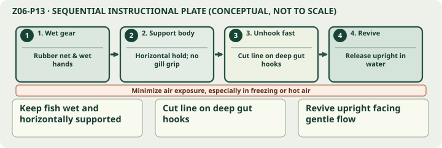

Z06-P13 · Hunting and fishing · New manuscript
Catch-and-Release Handling to Minimize Post-Release Mortality
Apply low-stress unhooking and water-support practices so released fish survive without gill or internal organ injury.
When it applies · All recreational catch-and-release angling and mandatory slot-limit releases.
Equipment · Rubberized landing net, long-nose hemostat/pliers, line cutters.

Actions
- Land fish promptly without exhausting them, wet hands before contact, use a knotless rubber net, and support larger fish horizontally rather than hanging vertically by the jaw.[H06]
- Keep air exposure brief—especially in freezing air or hot sun—and cut the line close to a deeply swallowed hook rather than tearing gills or esophagus.[H06]
- Hold recovering fish gently upright in water facing a light current until it swims away strongly under its own power.[H06]
Failure recognition · Squeezing fish gills, dragging fish across dry gravel, or yanking deep hooks causes high unseen post-release death.[H06]
Verify · Wet hands, rapid unhooking, horizontal support, and active swim-away are observed on every release.[H06]
Stop or change course · Stop fishing if repeated deep hooking, barotrauma from deep water, or extreme air/water temperatures prevent healthy release.[H06]
Evidence and editorial notes
- H06 · Minnesota DNR · Fishes of Minnesota Species Reference (Current web edition)
- Section: Positive fish species identification before keeping catch · Conditions: Identifying regional game, rough, and protected fish species
Support: Accurate species identification using fin counts, mouth structure, markings, and body profile is mandatory to comply with limits and protected-species rules.
Limitations: Juveniles and hybrids can resemble restricted species; release immediately when positive identification is uncertain. · Conflicting evidence: None noted.
Editorial note: Connects Z06 identification to lawful harvest. · Specialist reviewer: Fisheries biologist
Primary source · checked 2026-11-25
Source lineage · New manuscript (Z06 P17 conservation) · Classification · New manuscript.